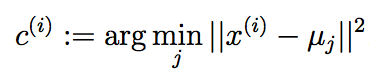
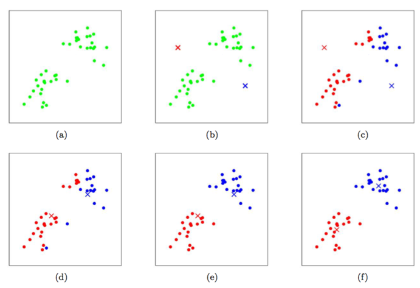

CS229
Lecture notes
翻译：CycleUser
k均值聚类算法(k-means clustering
algorithm)
在聚类的问题中，我们得到了一组训练样本集 {x(1), ..., x(m)}，然后想要把这些样本划分成若干个相关的“类群（clusters）”。其中的 x(i) ∈ Rn，而并未给出分类标签 y(i) 。所以这就是一个无监督学习的问题了。
K 均值聚类算法如下所示：
1. 随机初始化（initialize）聚类重心（cluster centroids） μ1, μ2,..., μk ∈ Rn 。
2. 重复下列过程直到收敛（convergence）: {
对每个 i，设

对每个 j，设

}
在上面的算法中，k 是我们这个算法的一个参数，也就是我们要分出来的群组个数（number of clusters）；而聚类重心 μj 表示的是我们对各个聚类的中心位置的当前猜测。在上面算法的第一步当中，需要初始化（initialize）聚类重心（cluster centroids），可以这样实现：随机选择 k 个训练样本，然后设置聚类重心等于这 k 个样本 各自的值。（当然也还有其他的初始化方法。）
算法的第二步当中，循环体内重复执行两个步骤：（i）将每个训练样本 x(i) “分配（assigning）”给距离最近的聚类重心 μj；（ii）把每个聚类重心 μj 移动到所分配的样本点的均值位置。下面的 图1 就展示了运行 k均值聚类算法的过程。

图1：k 均值聚类算法。图中的圆形点表示的是训练样本，交叉符号表示的是聚类重心。(a) 原始训练样本数据集。 (b) 随机初始化的聚类重心（这里的初始化方法就跟我们上面说的不一样，并没有从训练样本中选择两个点）。(c-f) 运行 k 均值聚类算法中的两步迭代的示意图。在每一次迭代中，我们把每个训练样本分配给距其最近的聚类重心（用同样颜色标识出），然后把聚类重心移动到所分配的样本的均值位置。（用颜色区分效果最好了。）图片引用自 Michael Jordan。
K 均值聚类算法能保证收敛性么？可以的，至少在一定意义上能这么说。尤其是我们可以定义一个下面这样的函数作为失真函数（distortion function）：

这样就可以用 J 来衡量每个样本 x(i) 和对应的聚类重心 μc(i) 之间距离的平方和。很明显能看出 k 均值聚类算法正好就是对 J 的坐标下降过程。尤其是内部的循环体中，k 均值聚类算法重复对 J 进行最小化，当 μ 固定的时候用 c 来最小化 J，当 c 固定的时候则用 μ 最小化 J。这样就保证了 J 是单调降低的（monotonically decrease），它的值也就必然收敛（converge）。（通常这也表明了 c 和 μ 也收敛。在理论上来讲，k均值 可能会在几种不同的聚类之间摆动，oscillate，也就是说某些组不同值的 c
和/或 μ 对应有完全相同的 J 值，不过在实践中这种情况几乎不会遇到。）
失真函数 J，是一个非凸函数（non-convex function），所以对 J 进行坐标下降（coordinate descent）并不一定能够收敛到全局最小值（global minimum）。也就是说，k 均值聚类算法可能只是局部最优的（local optima）。通常除了这个问题之外，k 均值聚类效果都不错，能给出很好的聚类。如果你担心陷入到某些比较差的局部最小值，通常可以多次运行 k 均值距离（使用不同的随机值进行来对聚类重心 μj 进行初始化）。然后从所有的不同聚类方案（clusterings）中，选择能提供最小失真（distortion） J(c,μ)
的。